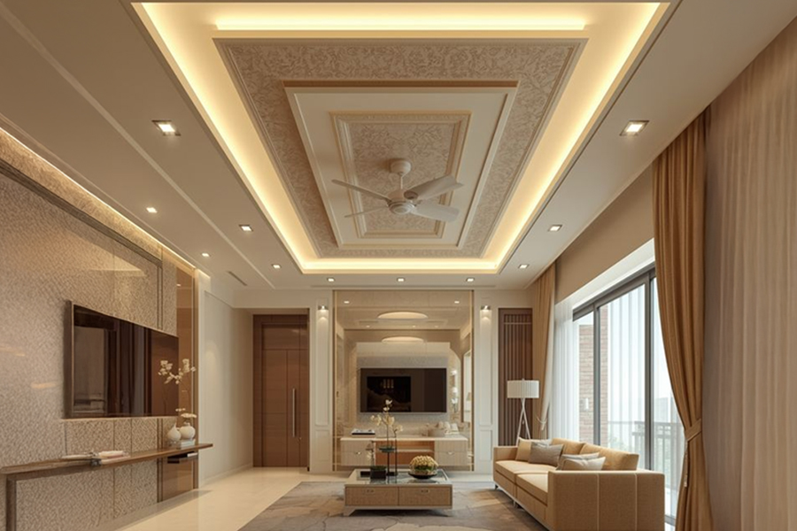
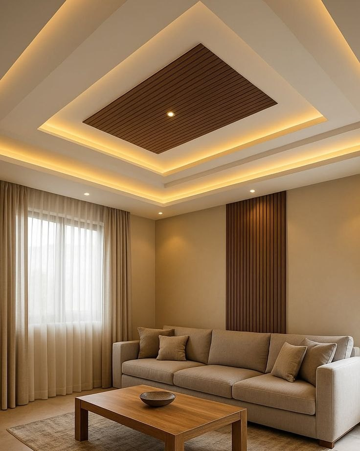

تنفيذ أسقف ديكورية وإضاءة مخفية في المدينة المنورة
الأسقف الديكورية تجمع بين معالجة شكل السقف وتوزيع الإضاءة بما يخدم مساحة الغرفة وارتفاعها. يمكن تنفيذ بروفايلات بسيطة، إضاءة مخفية، خطوط مودرن أو تفاصيل أكثر فخامة حسب طابع المكان.
في أعمال الأسقف نراجع ارتفاع الغرفة ومواقع التكييف والإنارة قبل اعتماد أي خطوط ديكورية، لأن التصميم الجميل يجب أن يظل عملياً ولا يقلل الارتفاع بصرياً.


ما الذي يميز هذه الخدمة؟
- تحسين شكل السقف وإخفاء بعض التمديدات بصورة مرتبة
- توزيع إضاءة مريح ومناسب للاستخدام اليومي
- إمكانية تنفيذ تصميم بسيط أو فاخر حسب المساحة
- تنسيق السقف مع الجبس والدهانات وباقي عناصر الديكور
أين تناسب؟
- المجالس والصالات
- غرف النوم
- المداخل والممرات
- المكاتب والمحلات
كيف نختار الحل المناسب؟
عند الاختيار نحدد هل الأولوية لإضاءة هادئة موزعة، بروفايلات خطية، أم عنصر سقف مميز فوق المجلس أو الصالة.
تنفيذ منظم من البداية للنهاية
أثناء التنفيذ يتم ضبط المناسيب والزوايا ومواقع فتحات الإضاءة أولاً، ثم إنهاء المعجون والدهان بحيث تبدو الخطوط متصلة ونظيفة.
خطوات التنفيذ
معاينة ارتفاع السقف ومواقع الكهرباء
نراجع تفاصيل الموقع ونحدد ما يلزم قبل التنفيذ.
تحديد شكل البروفايل ونوع الإضاءة
نثبت الاختيارات والمقاسات حتى تكون خطوات العمل واضحة.
تنفيذ الهيكل والتشطيب بدقة
يتم التنفيذ مع متابعة المحاذاة والتشطيب في كل مرحلة.
اختبار الإضاءة ومراجعة التفاصيل النهائية
نراجع التفاصيل النهائية وننظف منطقة العمل قبل التسليم.
خدمات مرتبطة قد تحتاجها
الربط بين أكثر من خدمة يساعد على الوصول لتشطيب متناسق، ويمكن الاطلاع على الخدمات التالية:
أسئلة شائعة عن أسقف ديكورية وإضاءة مخفية
هل تناسب الإضاءة المخفية الغرف الصغيرة؟
نعم، ويمكن اختيار تصميم بسيط وتوزيع إضاءة يساعد على إظهار المساحة بشكل أوسع بدون ازدحام بصري.
هل يتم التنسيق مع نقاط الكهرباء قبل التنفيذ؟
نعم، يتم تحديد مواقع الإضاءة والمفاتيح والتمديدات قبل إغلاق التفاصيل النهائية للسقف.
كم تستغرق أعمال الأسقف الديكورية؟
المدة تعتمد على مساحة الموقع وتعقيد التصميم، ويتم تحديدها بعد المعاينة ومعرفة تفاصيل التنفيذ.
تحتاج معاينة أو عرض سعر؟
أرسل صور المكان أو المقاسات عبر واتساب مع ذكر الخدمة المطلوبة، وسنساعدك في تحديد الخطوة التالية.